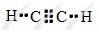

a) reakcja addycji
b) reakcja eliminacji
c) reakcja polimeryzacji
d) reakcja substytucji
a)
b)
c)
Zapisujemy równanie tej reakcji:
Widzimy, że wszystkie atomy węgla wchodzące w skład otrzymanego tlenku węgla(IV) pochodzą ze spalanego alkenu. Jeżeli zatem w produktach mamy łącznie 2 mole atomów węgla, to tyle też musi ich być w molu cząsteczek alkenu. Indeks n jest zatem równy 2.
Wzór sumaryczny spalanego alkenu to
a)
b)
Opis doświadczenia:
Etap 1. W probówce umieszczamy kawałek foli polietylenowej. Następnie probówkę zatykamy korkiem z rurka odprowadzającą, której wylot wprowadzamy pod wodą do drugiej, napełnionej wodą i odwróconej do góry dnem probówki. Probówkę z folią ogrzewamy w płomieniu palnika.
Obserwacje 1. Folia ulega rozkładowi w wyniku czego wydziela się bezbarwny gaz, który zbiera się w drugiej probówce.
Wniosek 1. Pod wpływem wysokiej temperatury polietylen ulega rozkładowi i wydziela się eten.
Etap 2. Probówkę z zebranym w etapie 1 etenem zatykamy korkiem z wkraplaczem, który napełniamy wodą bromową. Następnie wkraplamy wodę bromową do probówki z etenem.
Obserwacje 2. Woda bromowa ulega odbarwieniu.
Wniosek 2. Eten reaguje z bromem, przyłączając go do swojej cząsteczki w miejscu wiązania wielokrotnego. Eten jest węglowodorem nienasyconym.
Wzór sumaryczny polietylenu możemy zapisać jako
Odpowiedź: Polimeryzacji uległo 3000 cząsteczek etenu.
a)
b)
c)
d)
e)
1.
2.
3.
4.
5.
6.
Opis doświadczenia:
W trzech nieopisanych, zatkanych korkami probówkach umieszczamy heksan, butan oraz but-1-en.
Odróżnienie heksanu od dwóch pozostałych możliwe jest na podstawie prostej obserwacji stanu skupienia - heksan jest cieczą zaś butan i but-1-en to gazy.
Następnie do probówek z gazami dodajemy wodę bromową. Probówka, w której nastąpi odbarwienie wody bromowej, zawiera but-1-en zaś w drugiej znajduje się butan.
Wzór:

Liczba elektronów tworzących wiązania - 10
Liczba wiązań typu σ - 3
Liczba wiązań typu 𝜋 - 2